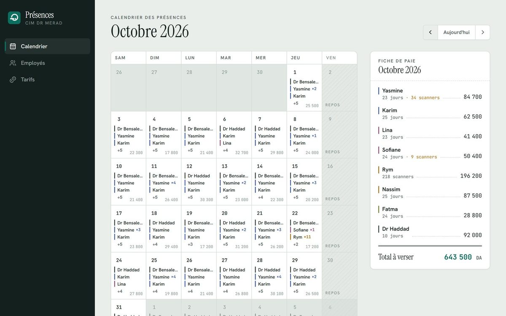

In productionEn productionCIM Dr MERAD
Attendance & payroll appAppli de présence et de paie
Replaces the paper attendance book and manual payroll of a medical imaging center: staff attendance is entered each day and pay is computed live, per day, per exam or with bonuses. Mobile-first and installable. Remplace le cahier de présence et le calcul manuel des salaires d'un centre d'imagerie médicale : les présences sont saisies chaque jour et la paie est calculée en continu, à la journée, à l'acte ou avec bonus. Pensée pour le téléphone et installable.
- Next.js
- TypeScript
- Redis
- Vercel